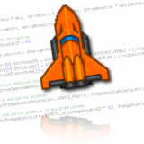

After all these years, I finally got around to releasing the manuscript for the Introduction to Nintendo DS Programming. I converted the manual from Subversion to git and placed it up on GitHub. I hope that it brings some more life to the document, as I haven't updated it in years. It's been a good resource for the Nintendo DS homebrew community, but it wasn't fair for me to be a bottleneck on all change and updates to the manual; that's a recipe for going out of date.
I've specified the license as Creative Commons Attribution-ShareAlike 3.0 Unported License. It's my hope that the manual will provide a good starting point for anyone in the community to use to document homebrew Nintendo DS programming.
The conversion from Subversion to git went very well. I'm thankful to Eric S. Raymond (esr) and his reposurgeon tool. With it, I was able to convert the entire history of the manual (with all its dirty warts) to git in just a few hours. This was my first time using reposurgeon, and I found it to have a bit of a learning curve. It all clicked when I figured out that the arguments to reposurgeon are just a list of commands to execute, and that changes are kept in memory until written with the "write" command.
If you are curious how the conversion was done, please have a look at my manual conversion archive. I basically followed esr's guide. I modified his conversion.mk file to suit my needs (setting some options and renaming it to Makefile) and wrote a script called "manual.lift" to massage the Subversion history into beauty. All the details are in the manual conversion archive.
Share and enjoy!